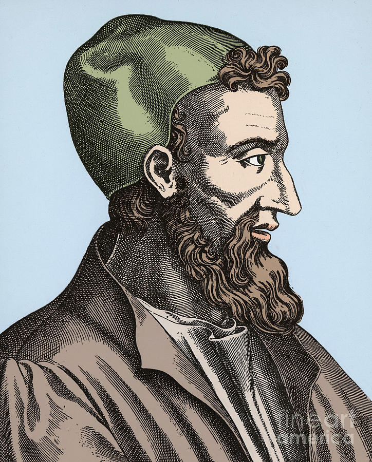

Welcome to the Mathematical World!
Claudius Galen
Greek Physician, Anatomist, and Philosopher of Science
Claudius Galen (c. 129 – c. 216 CE), commonly known as Galen of Pergamon, was a Greek physician, anatomist, and philosopher whose medical writings dominated both Eastern and Western medicine for over a millennium. Though primarily a physician, Galen’s contributions intersected with mathematics, particularly in physiology, anatomy, and the study of proportions.
Educated in Pergamon, Smyrna, and Alexandria, Galen absorbed the mathematical and logical traditions of the Greeks. His dissections of animals and his physiological experiments often relied on quantitative reasoning. For instance, he measured pulse rates, blood flow, and respiration, attempting to explain bodily functions through ratios and balances, echoing Pythagorean and Hippocratic traditions. He argued that health represented a state of equilibrium of the four humors—blood, phlegm, yellow bile, and black bile—analogous to balance in geometric proportions.
Galen emphasized the role of teleology and mathematical order in anatomy. He argued that nature acts according to rational design, and organs exhibit optimal proportion and harmony. His use of geometry was especially evident in musculoskeletal analysis. For example, Galen explained the mechanical advantage of muscles and tendons in terms resembling lever principles, thus linking medical science with applied mathematics.
Beyond anatomy, Galen contributed to logic and epistemology. His commentary on Aristotelian logic emphasized demonstration and proof, applying them to medicine. He sought to classify medical knowledge in ways resembling taxonomies in mathematics and natural philosophy. His insistence that medicine must be grounded in both theoretical and empirical demonstration foreshadowed scientific methodology.
Galen’s influence was immense. His works were translated into Syriac, Arabic, and Latin, forming the foundation of Islamic medicine and scholastic medicine in medieval Europe. While later anatomy (e.g., Vesalius in the 16th century) corrected his errors, his quantitative approach and integration of mathematics into physiology established an enduring model. Galen thus exemplifies the fusion of medical science, philosophy, and mathematical reasoning in late antiquity.